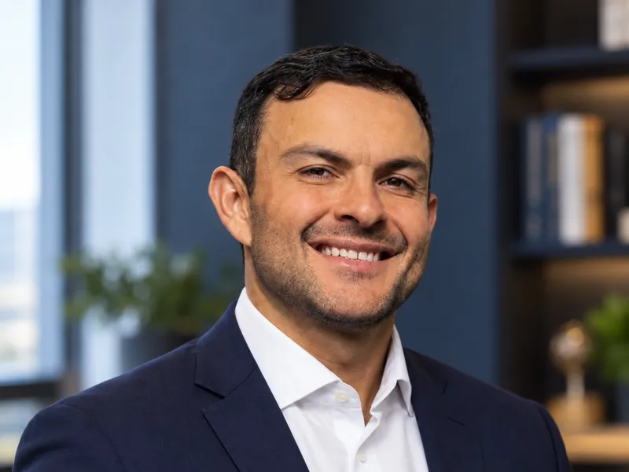
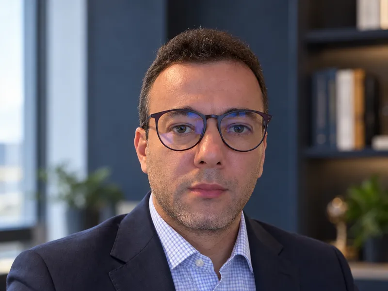

Parcelas e vencimentos
“Minha parcela vence e não vou conseguir pagar.”
“Já estou com parcelas atrasadas.”
“Tenho várias operações bancárias, não apenas uma.”
Crédito Rural
Operações de crédito rural, prorrogação, CPR, cobranças e execuções exigem análise do contrato, das garantias e da situação concreta do produtor. Atuação jurídica voltada a produtores rurais de Mato Grosso.
Atuamos em casos envolvendo
Situações que podem ser analisadas
“Minha parcela vence e não vou conseguir pagar.”
“Já estou com parcelas atrasadas.”
“Tenho várias operações bancárias, não apenas uma.”
“Procurei o banco e não consegui renegociar.”
“Recebi uma cobrança.”
“Recebi uma citação de execução.”
“Tenho uma CPR sendo cobrada.”
“Existe risco de bloqueio ou penhora relacionado à dívida.”
Se alguma dessas frases descreve o seu momento, o primeiro passo é entender tecnicamente a operação e o estágio do problema.
Solicitar informações pelo WhatsAppComo a atuação começa
Cada dívida rural tem contrato, garantias, cronograma e estágio próprios. Por isso, a atuação segue uma ordem.
Contrato, condições pactuadas, garantias, histórico da dívida e o estágio em que o problema se encontra.
Possibilidades jurídicas relacionadas à prorrogação, à renegociação ou à defesa diante de cobrança e execução.
Para agilizar o atendimento
Conforme o caso, os documentos ao lado ajudam a entender a operação. Se não tiver todos agora, você pode iniciar o contato com o que tiver.
Por que buscar orientação cedo?
Dependendo do contrato e do estágio da dívida, a situação pode avançar. Entender a operação antes disso amplia o que pode ser avaliado.
Esses efeitos não acontecem da mesma forma em todos os casos. É necessário analisar o contrato e a situação concreta.
Dúvidas frequentes
Quem conduz o atendimento?
Escritório de Cuiabá/MT com atuação em Agronegócio e Crédito Rural, incluindo alongamento de dívidas rurais (administrativo e judicial), revisões contratuais e reestruturação de operações de crédito rural.

OAB/MT 8.694

OAB/MT 15.287/B
Apresente sua situação pelo WhatsApp e receba as orientações iniciais.
Solicitar informações pelo WhatsApp